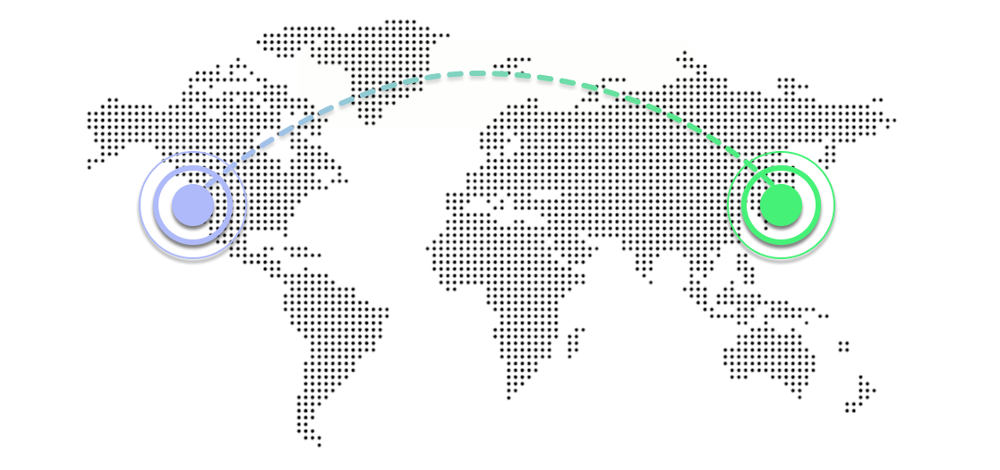
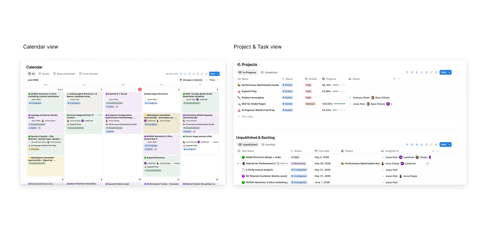
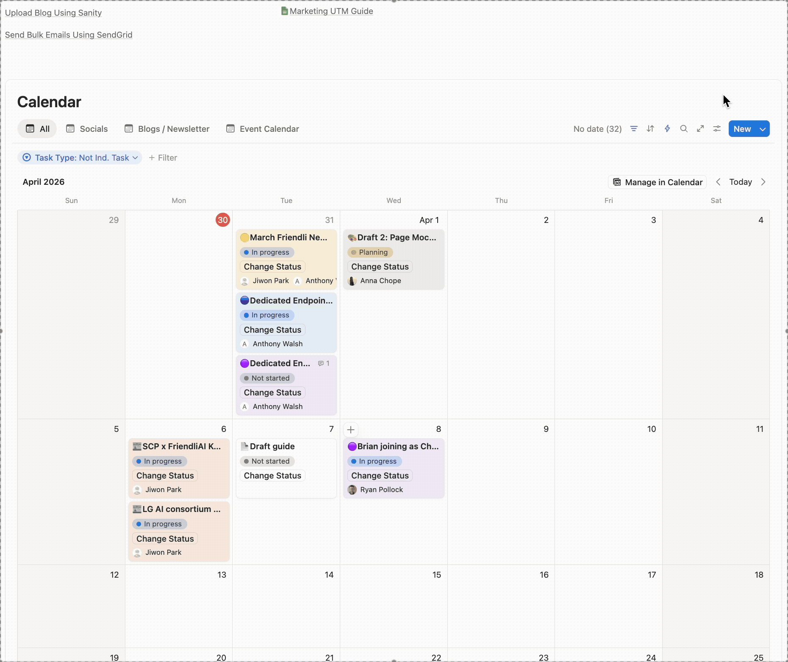

FriendliAI PM System
FriendliAI's first scalable marketing PMO system built from scratch, and hosted on Notion.

Architected and deployed a scalable Notion-based PMO system from the ground up to align a globally distributed marketing team across the Bay Area and Seoul; engineered AI-powered automations spanning project and task creation, master calendar scheduling, and real-time pipeline visibility across time zones.
The Goal
The initative was an internal effort engineered to drive operational efficiency and cross-team alignment as FriendliAI's marketing team rapidly scaled. The goal was to create a centralized PMO system that could support the team's growth, streamline project management processes, and enhance collaboration across the Bay Area and Seoul offices.
The Challenge
The main challenge beforehand was the lack of a centralized system to manage and track projects across different locations and time zones. Team members across the globe were using disparate tools and communication channels, leading to inefficiencies and misalignment.

The Solution
The main challenge beforehand was the lack of a centralized system to manage and track projects across different locations and time zones. Team members across the globe were using disparate tools and communication channels, leading to inefficiencies and misalignment.

Outcome
The result is a focused, structured PMO system that has significantly improved operational efficiency and cross-team alignment across the Bay Area and Seoul offices.
